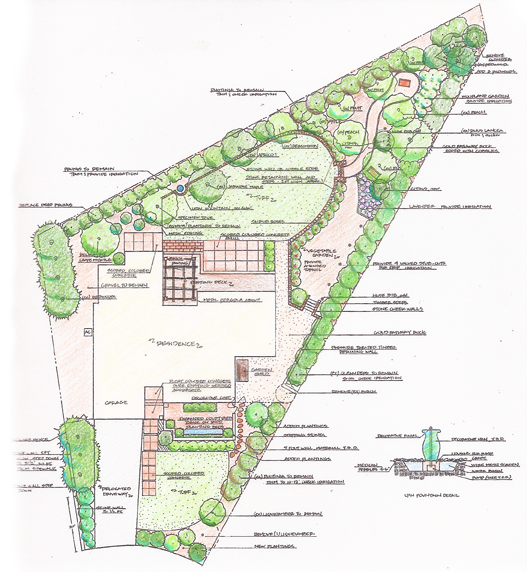
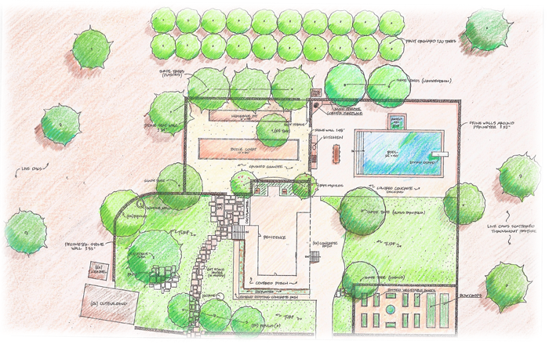

Following an initial consultation, in which I walk with you through your yard and discuss your vision and the desired functions of your space, I ask you to fill out a questionnaire. This questionnaire not only reminds me of your answers when I start drawing the design, but even more importantly, helps you think about your needs and desires.
At a later date I return to your site to take measurements, photos, and view the space at different times of the day. I take into account sun, shade, views (both desirable and undesirable), noise, and the general feeling of the space and how it currently functions.
With measurements in hand, I take to my drafting table where I draw up a “base plan” that shows property lines, placement of the house and other structures, as well as existing trees and other features that we have decided will remain. It is the architectural equivalent of a “bubble diagram” and the basis for future discussions and ideas.
Placing tracing paper over this base plan, I can now sketch one or several different optional Conceptual Plans, which delineate patios, planting beds, paths, and any other functional element, e.g. pool, spa, dining area, vegetable garden, cutting garden, etc. that you might desire. I may note “flagstone walk”, “metal dining pergola”, “urn fountain”, “boxwood-lined vegetable parterres”, or “child’s play structure” on the drawing.
I will then meet with you to go over the different plans and discuss what you like and don’t particularly like in each one. Perhaps you love the pool shape, but don’t like the idea of having citrus trees because they attract bees. Perhaps you like the idea of a vegetable garden, but don’t want the formality of the boxwood parterre. Maybe you prefer the plan with straight lines and rectangular geometry to the one with sinuous curves and less symmetry. This is the time to make adjustments to the plan and take the elements that you like and integrate them into a Final Conceptual Plan.
When the Final Conceptual Plan meets your approval, I will be able to incorporate a Planting Plan, which specifies every plant by botanical and common name, quantity, size, and placement; into a Final Conceptual/Planting Plan. This plan will also detail out planting specifications, soil improvements, and conceptual designs for fences, pergolas, or other structures. Usually this single plan will suffice, but occasionally multiple drawings may be needed to convey specific design elements. If desired, a general lighting plan can also be included.
An Irrigation Plan may or may not be necessary, depending upon your contractor and the city in which you live. Many contractors design their own irrigation using parameters that I give them.
Once you approve the Conceptual/Planting Plan, a Licensed Landscape Contractor will be able to give you a “bid” or an estimate to install the design. The bid will include demolition, soil preparation, materials for hardscape, drainage, and structures, and irrigation as well as plants and planting. Some items, such as a “fountain” or a “bench”, that have not yet been picked out, would not be included in this estimate.
During construction I am available to oversee and consult with the contractor. Many decisions are made during construction, and it is my desire to maintain the integrity of my designs by working with the contractor during this phase.
Not everyone needs a full garden designed. Some people only want to plant out a particular area and want to do it themselves. I can draw simple planting designs for any size area, specify plants that will work well in your area; depending upon exposure and water requirements, and your intentions. I will also recommend how to amend your soil and irrigate and maintain your plants so that your new garden will thrive.
Although I do not have a staff of gardeners, I do provide garden maintenance consultation. I can work with your garden staff to provide my knowledge of soil improvement, watering, pruning, fertilizing, annual plantings, and general maintenance.
Many people like to maintain their own gardens, but are not familiar with the techniques needed to do this correctly. I provide this service to anyone interested in getting in and doing it themselves. From how to prune roses, when to cut back perennials, when to consult an arborist on the health and pruning of trees, when and with what to fertilize.
Although a lifetime passion, the designing of gardens is a second career for me after working in the wine industry for 15 years.
I have been designing gardens in the Napa and Sonoma valleys and San Francisco since 1997. From postage stamp City gardens to family homes in the wine country, to larger country estates; every client has a vision of how their garden should look, feel, smell, sound, and even taste. My experience can help you define that vision and make it a reality. Together we can create a garden that is both beautiful and functional by applying sound sustainable practices that are respectful of our natural resources.